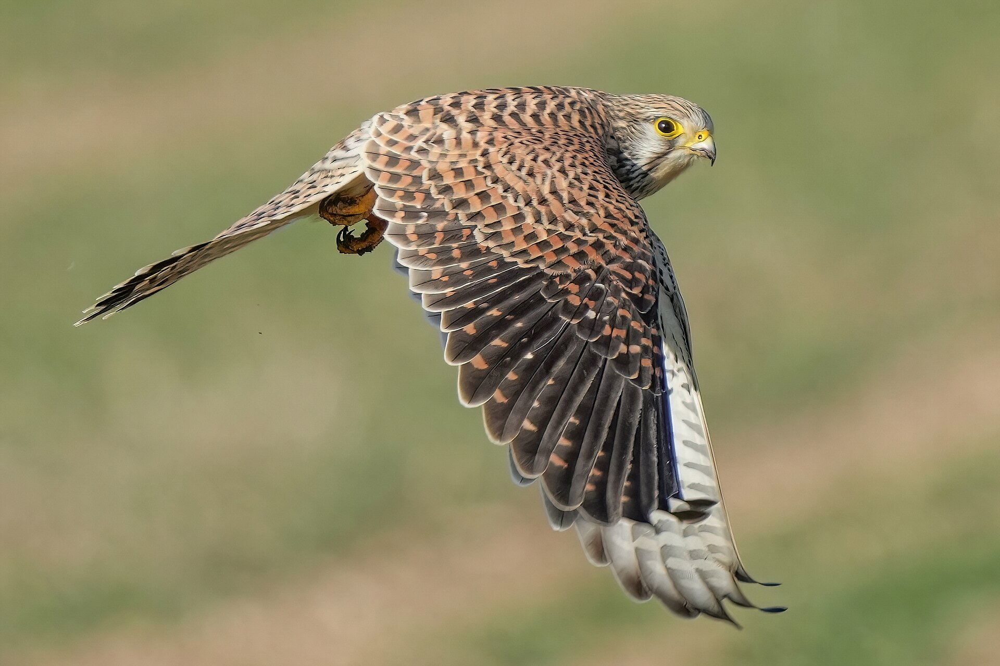

Common kestrel — Falco tinnunculus
Range: A familiar small falcon over fields and city edges across Eurasia and Africa. Resident or partial migrant according to latitude. In Lebanon and the Levant it appears as a local resident, a passage migrant, and a winter visitor depending on area and elevation. It is recognised by its hovering while searching for prey, relatively long tail, and marked face. Adult males usually show a grey head and tail, with black spots on the back and wing coverts; females and juveniles are more heavily rufous-barred above. The adult male’s spotted back and black claws, when clearly visible, help distinguish it from the lesser kestrel Falco naumanni (Arabic: العُوَيْسِق), whose adult male has an unspotted back and pale claws. Separating females and juveniles of the two species requires careful assessment of several plumage and structural features.
Life cycle and habitat: Breeding begins in spring; the pair defends a hunting territory. The female typically lays 4–6 eggs; incubation lasts about a month, mostly by the female while the male supplies prey. Nestlings remain several weeks before first flight. It nests in rock cavities, buildings, and old nests of other birds. It hunts over open ground—fields, pastures, fallow land, road edges, and urban fringes that offer high lookout points. Main prey is small rodents, with large insects, lizards, and nestling birds when rodents are scarce.
Lifestyle: Its signature behaviour is windhovering: rapid wingbeats and a fanned tail against the breeze while scanning the ground, then a controlled drop onto prey. Diurnal hunting by sight. Solitary or in pairs when breeding; it adapts well to people wherever nest cavities and open hunting space remain. Dark facial markings and moustaches reduce glare—an adaptive detail shared with other falcons.


Hunting status: Across Arab countries, birds of prey are generally protected and may not be hunted as quarry. In Lebanon, Wild Hunting Law No. 580/2004 limits hunting to quarry species set by the minister; everything else—including all birds of prey—is protected year-round and may not be hunted; the common kestrel is not among the permitted quarry. Despite legal protection, it still faces illegal shooting in some seasons and along some flyways.
Conservation status: Globally Least Concern with the International Union for Conservation of Nature, despite local declines in some intensively farmed regions. Locally it may be affected by pesticides and loss of nest sites.
Traits: Its hover is a visual scanning technique that gauges distance before the stoop, not a show. A living bridge between field and city, and an indicator of rodent abundance where it is regularly seen.